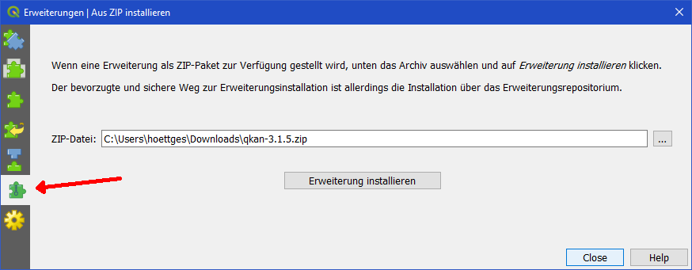

1. QKan - Plugin Installation¶
Willkommen beim Step by Step Tutorial zur Installation von QKan mit dem Betriebssystem Windows. QKan kann auch unter Linux verwendet werden, wo QGIS zum größten Teil weiterhin entwickelt wird. Die nachfolgenden Schritte sind dort in ähnlicher Weise durchzuführen.
Um QKan auf einem Computer neu einzurichten sind einige Arbeitsschritte notwendig, welche im Folgenden vorgestellt werden. Zunächst aber noch eine grundlegende Anmerkung: QKan besteht aus einem Plugin, mit dem das Open-Source GIS-Progamm QGIS um vielfältige Funktionen zur Kanaldatenverwaltung erweitert wird. Ausschließlich für die Verwendung im Zusammenhang mit dem Simulationsprogramms HYSTEM-EXTRAN 7.x wird ein zweites Plugin benötigt, das aber noch zusätzlich weitere Installationen notwendig macht. Dies hängt damit zusammen, dass HYSTEM-EXTRAN 7.x eine Firebird-Datenbank verwendet.
1.1. QGIS Installieren¶
QKan basiert auf dem Open-Source-Programm QGIS 3. Deshalb wird dieses als erstes benötigt. Die aktuelle Version von QGIS finden Sie hier: QGIS oder falls dieser Link nicht funktioniert können Sie manuell www.QGIS.org aufrufen. Für größere Organisationen ist die sogenannte LTR (long time release) Version empfehlenswert, weil bei dieser Variante mehr Wert auf Stabilität als auf die neuesten Funktionen gelegt wird.
Laden Sie die für Sie zutreffende „Eigenständige QGIS-Installation“ herunter. Stellen Sie sicher, dass Ihnen genügend freier Speicherplatz zur Verfügung steht, da die QGIS-Installation etwa 1,5 GB Speicherplatz einnehmen wird. Wählen Sie in Abhänigkeit von Ihrem Betriebssystem und Ihrer Betriebssystem-Version einen Downloadlink aus. Die nachstehende Abbildung zeigt die „Eigenständige QGIS-Installation Version 3.xx (64bit)“:

Starten Sie die Installation, akzeptieren das Lizenzabkommen und bestätigen die Installation im Standardverzeichnis „C:\Programme\QGIS 3.xx“. Als letztes werden Sie nach zusätzlichen Komponenten, wie zum Beispiel dem North Carolina Data Set gefragt:

Es handelt sich um Beispieldaten, die für die Nutzung von QKan nicht benötigt werden. Klicken Sie anschließend auf „Installieren“, um die Installation zu starten. Diese Installation kann einige Minuten in Anspruch nehmen.
1.2. QKan Plugins für QGIS¶
Nachdem QGIS erfolgreich auf Ihrem System installiert wurde, kann nun das QKan-Plugin installiert werden. Einen Link zu den aktuellen Version finden Sie hier (rot eingerahmt): QKan3-GITHUB .

Laden Sie das ZIP-Archiv herunter. Die Installation des Plugins erfolgt mit Hilfe des entsprechenden QGIS-Menüs. Starten Sie dazu QGIS und öffnen Sie das Menü „Erweiterungen > Erweiterungen verwalten und installieren…“. Wählen Sie dort die Kategorie „Aus ZIP installieren“:
Nun können Sie das ZIP-Archiv mit der Schaltfläche […] auswählen und die Erweiterung installieren.
Nach dem Schließen dieses Fensters stehen in QGIS ein Werkzeugkasten „QKan“ mit mehreren Icons sowie ein Hauptmenü „QKan“ mit mehreren Untermenüs zur Verfügung.

Damit haben Sie QKan erfolgreich auf Ihrem Computer installiert!
2. QKan-HE7 Plugin für HYSTEM-EXTRAN 7.x¶
Falls Sie Daten direkt mit dem Simulationsprogramm HYSTEM-EXTRAN 7.x austauschen wollen, müssen Sie auch die nachfolgenden Installationen vornehmen, um anschließend das entsprechende Plugin nutzen zu können.
Das QKan-Plugin zum direkten Datenaustausch mit HYSTEM-EXTRAN 7.8 und 7.9 erfordert zunächst die Installation eines Firebird-Datenbank-Servers sowie des zugehörigen Python-Moduls. Die dazu notwendigen Schritte werden in den nachfolgenden Kapiteln erläutert.
2.1. Firebird Installieren¶
Die Datenbankanwendung Firebird wird für den Zugriff auf die HYSTEM-EXTRAN-Dateien (*.idbf) benötigt. Einen Link zum Download finden sie hier: Firebird oder Sie besuchen www.firebirdsql.org und wählen dort unter dem Reiter „Downloads“ den Punkt Firebird 2.5 aus.
Auf der Seite befinden sich ähnlich wie bei der QGIS Installation wieder mehrere Downloadlinks. Benötigt wird der „Installer for Superclassic/Classic or Superserver“. Wählen Sie auch hier wieder den für Ihr Betriebssystem und Version passenden Link aus. In diesem Beispiel verwenden wir den „Windows executable installer for full Superclassic/Classic or Superserver, recommended for first-time users“ für Windows 64-bit:

Über diesen Link werden Sie zu einem Downloadportal namens sourceforge.net weitergeleitet, wo nach wenigen Sekunden der Download starten sollte. Sollte es Probleme mit dem Download geben, beachten Sie bitte die Hinweise auf der Seite. Anschließend starten Sie die heruntergeladene Datei Setup.exe. Aktzeptieren Sie auch hier wieder die Lizenzvereinbarungen. Wählen Sie ein Verzeichnis, um Firebird zu speichern oder verwenden Sie das Standartverzeichnis „C:\Program Files\Firebird\Firebird_2_5“. Gehen Sie nun sicher, dass Sie bei der Installation der Komponenten den Punkt „Super Server Binärdateien“ ausgewählt haben.

Als nächstes wird Firebird einen Startmenü-Ordner anlegen. Dieser wird nicht unbedingt benötigt und kann durch die Checkbox „Keinen Order im Startmenü erstellen“ verhindert werden. Anschließend wird eine Abfrage über die zusätzlichen Aufgaben von Firebird erscheinen. Gehen Sie sicher, dass Ihre Auswahl wie folgt aussieht:

Bevor die Installation fertiggestellt werden kann, werden noch zwei Checkboxen erscheinen:

Der Punkt „After installation - What Next?“ bringt Sie zurück auf die Firebirdseite und bietet weitere Informationen zur Nutzung von Firebird. Die zur Nutzung von QKan benötigten Informationen bekommen Sie jedoch hier. Um zu testen ob der Firebirdserver auch richitg auf Ihrem System läuft, öffnen Sie den Taskmanager und suchen unter dem Reiter Prozesse nach „fbserver.exe“.
2.2. Zusätzliche Python-Module¶
Nun muss in QGIS ein Modul ergänzt werden. Da Installationen nur mit Administrator-Rechten ausgeführt werden können, müssen Sie dazu „QGIS“ als Administrator ausführen, um dort die weiteren Schritte vornehmen zu können. Falls Sie keinen Administrator-Zugang haben, wenden Sie sich an Ihren IT-Administrator, damit er die nachfolgenden Schritte ausführt.
2.2.1. pyfirebirdsql¶
Dieses Modul wird von den QKan-HE7-Plugins für die Kommunikation mit der Firebird-Datenbank benötigt. Einen Link dazu finden Sie hier: pyfirebirdsql oder besuchen Sie www.gihub.com/nakagami/pyfirebirdsql.
Sie sollten sich nun auf der folgenden Seite befinden:

Wenn Sie die Seite manuell öffnen, achten Sie unbedingt darauf, dass Sie das richtige Modul auswählen. Wenn Sie auf der weiter oben angegebenen Seite angekommen sind, können Sie durch den „clone or download“-Button die Datei herunterladen. Klicken Sie erst auf „clone or download“ und anschließend auf „Dowload ZIP“. Dann führen Sie den Download entsprechend ihrem Browser durch.

Sie erhalten nun eine .zip Datei mit dem Namen „pyfirebirdsql-master“. Der darin enthaltene Ordner kann jetzt entpackt und anschließend in ein beliebiges Verzeichnis verschoben werden.
Die eigentliche Installation erfolgt in QGIS, das hierfür mit Administrator-Rechten gestartet werden muss.
2.2.2. Starten von „QGIS“ mit Administrator-Rechten¶
Das Vorgehen unterscheidet sich etwas, je nachdem, welche Version von Windows Sie haben.
Sie suchen im Startmenü „QGIS“ und klicken mit der rechten Maustaste darauf. In der Liste wählen Sie „Als Administrator ausführen…“. Unter Windows 10 erscheint zunächst „Mehr“, wo Sie dann „Als Administrator ausführen…“ auswählen.
Warnung
Achten Sie unbedingt darauf, „QGIS“ als Administrator auszuführen, da sonst kein Zugriff möglich ist!
Für die Installation des Moduls „pyfirebirdsql“ müssen einige Python-Kommandos ausgeführt werden. Hierzu öffnen Sie bitte in QGIS die Python-Konsole mit Hilfe des Menüs „Erweiterungen > Python-Konsole“.
Geben Sie nun nacheinander die nachfolgend aufgeführten drei Zeilen ein. Dabei ist "C:\install\firebird\pyfirebirdsql-master" in diesem Beispiel der Pfad, auf dem die Installationsdateien für das Modul „pyfirebirdsql“ und insbesondere die Datei „setup.py“ liegen:
import os
os.chdir(r"C:\install\firebird\pyfirebirdsql-master")
os.system("python setup.py install")
Zur Erläuterung: Für die weiteren Befehle wird das Modul “os” benötigt, das zuerst geladen werden muss. Nun muss das Arbeitsverzeichnis auf das Verzeichnis gesetzt werden, auf dem die Installationsdateien für das Modul „pyfirebirdsql“ liegen (Anmerkung: der Buchstabe „r“ vor dem Pfad dient in Python dazu, das Zeichen „\“ als Bestandteil des Verzeichnispfades zu interpretieren und nicht wie in Python üblich als Excape-Zeichen). Anschließend wird der Installationsprozess gestartet.
Wenn in der Python-Konsole eine 0 angefügt wurde, war die Installation erfolgreich.:
>>>import os
>>>os.chdir(r"C:\install\firebird\pyfirebirdsql-master")
>>>os.system("python setup.py install")
0
2.3. QKan-HE7-Plugin¶
Nachdem die notwendigen Voraussetzungen geschaffen sind, kann das Plugin zum Datenaustausch mit dem Simulationsprogramm HYSTEM-EXTRAN 7.x installiert werden. Die Installation erfolgt wie bei dem QKan-Plugin (siehe oben) durch Download, einfaches Kopieren des Ordners „qkan_he7“ aus dem ZIP-Archiv „qkan_he7.zip“ und Aktivieren.
Warnung
Die ersten Anwender von QKan berichten davon, dass die Firebird-Datenbank in der hier verwendeten lizenzkostenfreien Version Probleme verursacht, wenn sich die Hystem-Extran-Datenbankdatei (Kanalnetz- oder Ergebnisdaten) in einem Netzwerk-Verzeichnis befindet. In diesem Fall hilft es, die Datei in ein lokales Verzeichnis (auf C:) zu verschieben, und später nach Beendigung der Arbeit wieder zurück zu verschieben.